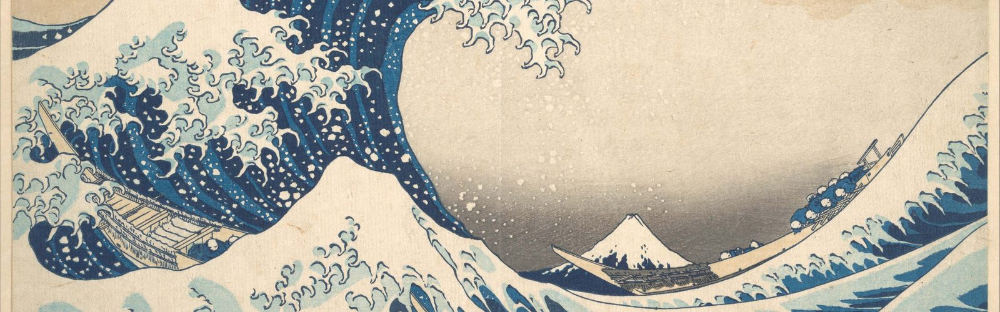
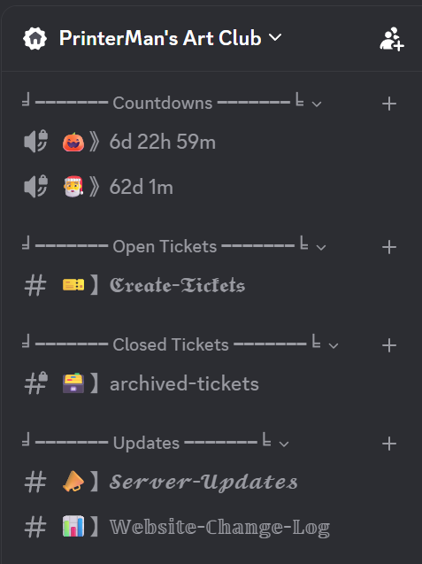
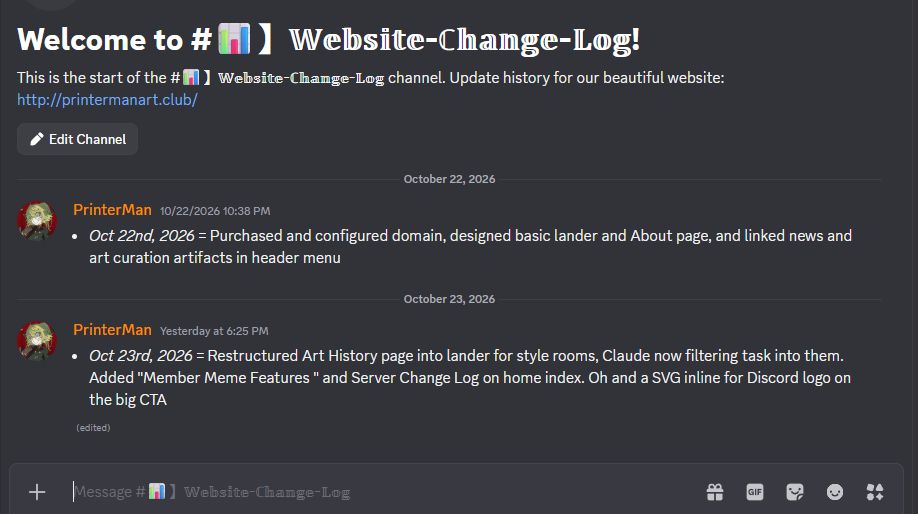
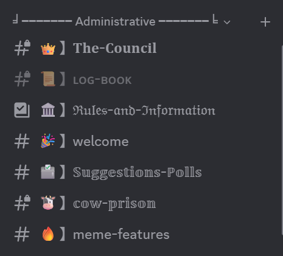
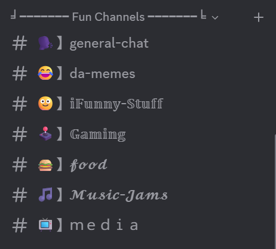
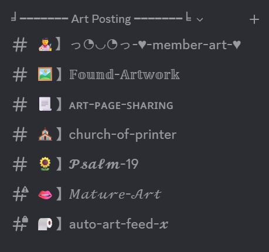
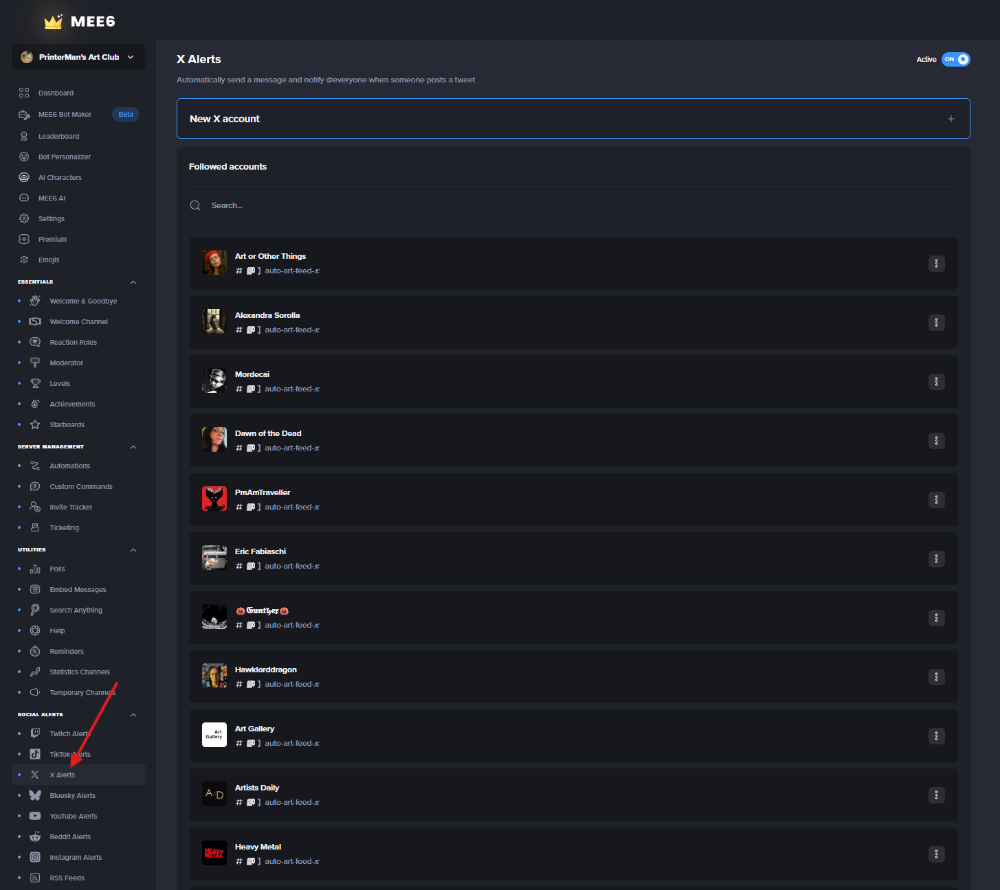
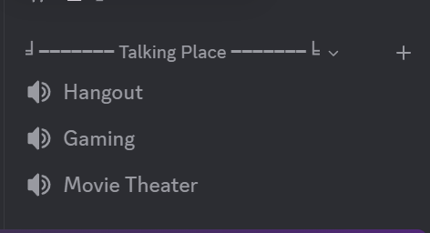

About
I am the PrinterMan, the gracious ruler of this realm. I have created PrinterMan's Art Club as an extension of my iFunny presence and thereby as a suitable replacement for the vileness of it. Here, I welcome all to my sanctuary. Whether you are an artist or not, we all will benefit from the community through healthy dialogue, shared values of excellence, and good vibes forever.
This place is more than art appreciation. We are centered on encouraging each other through examples of brotherhood and honor, dedicated to the propositions of equality and justice.
I am grateful for all who visit. Share with us your doodles, masterpieces, and creative energies of all forms. But most of all, share your true self. Together, we will make the Internet great again.
Thank you and have a good day!
Server Tour
My Discord servers have always reflected my love of organization. Channels all have a specific purpose I try to make clear for everyone. Hopefully, a little tour will enlighten me as to my process and give you some ideas of your own Discord server. I don’t suspect I’ll change the server too drastically from what I am showing now, but if I do I’ll update this page. If you have any questions, feel free to connect.
Channels
First for channels, group them by recognizable categories. Then, people can collapse what they don’t immediately need to see. I love symmetry too in designs, so it helps visually if there are an equal amount of channels grouped in categories. My main categories hold seven, somewhat of a spiritual number.

Yet, before those primary groups, I used Statbot to create a countdown marker vc (what it calls a type of “statdock”). Not complicated to set up and pretty useful to hype us up for the holidays. I figure two events are plenty for the spacing.
Then the ticket categories are for creating temporary channels for people who request to speak privately with admins. It uses a button programmed from MEE6. It’s never really been used but it’s professional to have anyway in large servers. The cool thing is the bottom category is a private space for admin to view closed tickets. After some time you can delete it altogether, which actually stores the transcript from the ticket channel into your MEE6 account (becoming a hyperlinked message in my “archive tickets”). Drama brings down servers more than anything else. Whatever system you use, keep it consistent and orderly.

Updates category… well that’s for updates. I have two channels, one for server announcements and another for a more technical journal of this website. Community servers are required to have at least one announcement channel.

The next group is the first main category, holding my idealized seven channels. Well, that’s a bit misleading for most people. The Council is our admin chat and the Log Book is the audit log generated from MEE6. Both of them are hidden from the general public, the “everyone” permissions.
Discord is great at setting controls over who can see what. Which is helpful for customizing the community experience. For example, people can subscribe to certain roles that give access to channels of their interests (game or shows) or you restrict the dudes from a lady’s chat.
Anyway, besides the first two in the category, Rules and Information simply states the rules, gives the above “about” intro, and defines the admins roles. Welcome is a where default join messages ping. Suggestions / Polls, as the name implies, is for everyone to give server feedback. The COW Prison is a special place we created for some Cranky Old Whackjob members who might be obnoxious in chat. Rather than mute, kick, or even ban them outright, they can live in this timeout channel for some remediation.
Meme Features is our version of iFunny’s feature system. It uses MEE6’s “Starboard” plugin. Essentially, it tracks member reactions to meme channel posts and if it hits a certain benchmark, it will repost in the features channel. Democracy “features” the funny people! Isn’t that swell? And that’s how we get our Member Meme Features from the homepage here.

Next, we got the standard channels you might see in most Discord servers. People need a place to chat about generally, the General Chat. Having way too many narrowly defined channels can feel overwhelming for new people. General is fine to start for a while and only develop the rest as the need arises. Food, music, and gaming probably will make sense as a natural fit for communities. Media we have for social media posts and off topic YouTube shorts. Memes fit in the media or even in general channels. However, I am having the starboard tool watch the reactions in that specific channel, so it only features memes themselves.
Oh, and some people come directly from iFunny or at least are familiar with the iFunny subculture we started in… so a dedicated channel for iFunny links makes sense for our niche.

Finally, the art channels! Art is the theme but I am careful not to cater only to professional artists. Anyone, amateur or expert in the craft, can post their creations in the Member Art channel. Art belonging to other people goes in Found Artwork. That is, art you found and want to share… Maybe that title needs work? You get the idea. Then, Art Page Sharing is for sharing online portfolios or generally webpages filled with art.
We have some spiritually minded members, myself included, who requested a channel for religious art – the purpose of Church of Printer. And, Psalm 19 is a place for God’s art, nature, animals, space, etc…
Mature Art is one of those channels hidden behind a selectable role, so we protect kiddos and sensitive people from gore or artistic nudes.

The Auto Art Feed X is another channel customized by MEE6 where it creates a custom feed of posts from X pages (formerly Twitter). I chose a curation of art and history themed profiles. Similar feed bots exist too but MEE6 works best for me (with the one-time payment for premium. Is what it is). This channel is also only visible to a selectable role simply because it updates the feed quite often and for some its too much activity.

And then… we got some VCs, voice channels as they are called. I am not a big fan of managing many that never get used. Three for our specific needs is a good constraint. Aesthetically pleasing Discord servers set them apart from the mass of similar ones.
So now that you got a real look at the server itself, why not join the fun? We’d love to meet you and see your creativity at work!